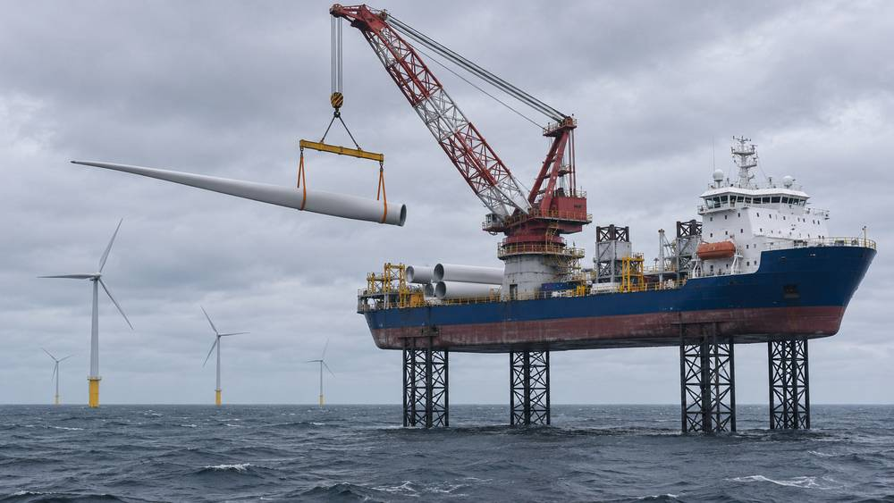

해상풍력 설치선 취득세 85% 감면 법안 발의

채현일 의원 등 10명이 낸 지방세특례제한법 개정안으로, 재산세도 5년간 50% 줄인다. 시행은 2027년 1월, 입법예고는 11월 22일까지다.
해상풍력 발전시설을 짓고 관리하는 데 쓰려고 사는 선박의 취득세를 85% 깎아 주는 「지방세특례제한법」 개정안이 국회에 제출됐다. 채현일 의원 등 10명이 11월 12일 대표발의했고, 소관 위원회는 행정안전위원회다. 공동발의자는 손명수·조인철·맹성규·김한규·박민규·장종태·민병덕·김남희·박균택 의원이다.
개정안은 제64조(해운항만 등 지원을 위한 과세특례)에 제5항을 새로 둔다. 대상은 「해상풍력 보급 촉진 및 산업 육성에 관한 특별법」 제2조제2호의 해상풍력발전시설을 건설하고 사후관리하는 데 쓰려고 취득하는 선박 가운데 대통령령으로 정하는 선박이다(어떤 선박이 드는지는 아직 정해지지 않았다). 취득세 감면은 2029년 12월 31일까지 적용된다. 과세기준일에 그 용도로 쓰고 있는 선박은 재산세 납세의무가 처음 생긴 날부터 5년 동안 재산세를 50% 줄인다.
정당한 사유 없이 취득 뒤 1년이 지나도록 그 용도로 쓰지 않으면 깎아 준 취득세를 다시 걷는다. 직접 쓴 기간이 2년이 안 된 상태에서 팔거나 증여하거나 다른 용도로 써도 마찬가지다. 현행 제64조는 국제선박, 연안항로 여객·화물 운송용 선박, 외국항로 취항용 선박, 친환경선박 등의 취득세와 재산세를 깎아 주지만 해상풍력 터빈 설치선(WTIV)은 대상이 아니다. 발의자들은 대형 기자재를 나르고 설치하며 유지관리하는 전용 선박을 제때 확보하고 국내 조선산업 경쟁력을 높이려는 취지라고 밝혔다.
법은 2027년 1월 1일부터 시행되고, 시행 이후 취득하는 선박부터 적용된다. 국회 입법예고는 11월 13일부터 22일까지이며 의견은 국회입법예고 누리집에서 낼 수 있다.
시민에너지 관점
이 감면은 해상풍력 설치선을 사들이는 사업자에게 돌아간다. 취득세와 재산세는 바다를 끼고 사는 지방정부의 살림이기도 하다. 세금을 깎아 해상풍력을 앞당긴다면, 그 단지에서 나오는 이익의 일부가 어민과 연안 주민에게 돌아가는 장치도 함께 갖춰져야 한다. 행정안전위원회가 감면 대상 선박을 정할 대통령령의 범위와 함께 지역 이익공유 방안을 따져 보길 바란다.
출처: 국회(채현일 의원 대표발의) 2026-11-12 「지방세특례제한법 일부개정법률안」(의안번호 2222756) 의안 원문 원문 보기
출처: 국회입법예고 2026-11-13 지방세특례제한법 일부개정법률안 입법예고(2026-11-13~11-22, 행정안전위원회) 원문 보기